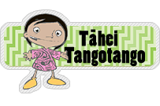

Pāhekoheko Tau Matihiko
Site Navigation
Whārangi matua
|
Whakamārama
|
Pou āwhina
|
Tauākī whakaako
Learning Object Navigation
Tāhei-Tāpiripiri
|
Tūtohi Tukutuku
|
Tāhei Tangotango
|
Tāhei Huatango
|
Tāhei Tau Punarua
|
Papa Whakarea

Related links
Ngā hononga
Whakahoki kōrero
Te mana whakamahi i tēnei kōpae
Tāhei Tangotango
Hei whakaako, hei whakapakari i te tamaiti ki ngā momo rautaki whakaoti tangohanga i rō hinengaro.
Hangaia āu ake tangohanga
Ngā tangohanga kua hangaia kē
Hangaia āu ake tangohanga uaua
He tangohanga uaua
Akoranga
Ngā rautaki
Papakupu
© 2005 Te Tāhuhu o te Mātauranga